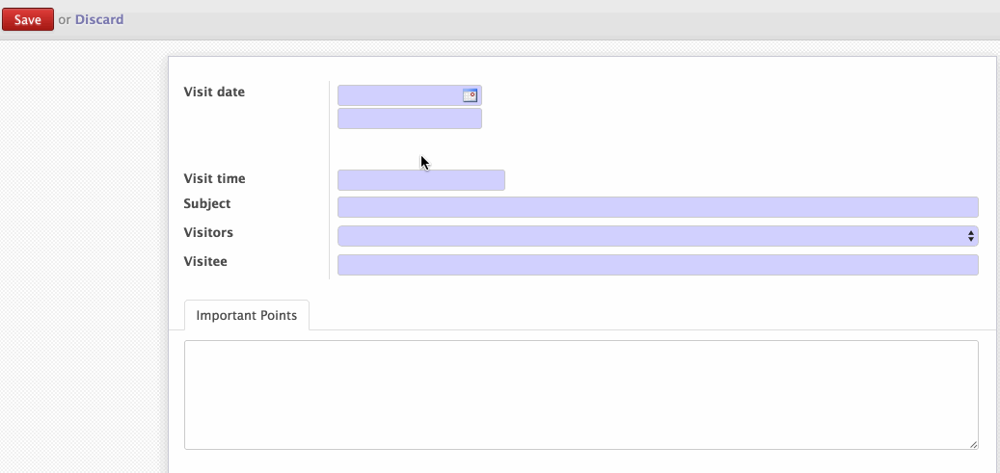

<section class="oe_container">
    <div class="oe_row oe_spaced">
        <div class="oe_span12">
            <h2 class="oe_slogan">Odoo Timepicker</h2>
            <h3 class="oe_slogan">A simple Timepicker plugin for your Odoo apps</h3>
        </div>
        <div class="oe_span6">
            <div class="oe_demo oe_picture oe_screenshot">
                <a href="#">
                    
                </a>
                <!--<div class="oe_demo_footer oe_centeralign">Online Demo</div>-->
            </div>
        </div>
        <div class="oe_span6">
            <p class="oe_mt32">
A simple and customizable plugin to bring timepickers in your simple Char fields.
This plugin is based on <a href="https://github.com/jonthornton/jquery-timepicker">jQuery Timepicker</a> plugin by <a
                    href="https://github.com/jonthornton">Jon Thornton</a>

            </p>
        </div>
    </div>
</section>